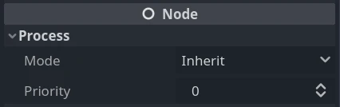

Tạm dừng game và process mode
Giới thiệu
Trong hầu hết các game, đến một lúc nào đó người ta sẽ muốn tạm ngừng game để làm việc khác, chẳng hạn nghỉ giải lao hoặc thay đổi tùy chọn. Việc triển khai cơ chế kiểm soát chi tiết những gì có thể tạm dừng (và những gì không) tốn rất nhiều công sức, vì vậy Godot cung cấp sẵn một framework đơn giản cho việc tạm dừng.
Cách hoạt động của việc tạm dừng
Để tạm dừng game, cần đặt trạng thái tạm dừng. Việc này được thực hiện bằng cách gán true cho thuộc tính SceneTree.paused:
get_tree().paused = true
GetTree().Paused = true;
Làm vậy sẽ gây ra hai điều. Thứ nhất, vật lý 2D và 3D sẽ dừng với mọi node. Thứ hai, hành vi của một số node sẽ dừng hoặc bắt đầu tùy theo process mode của chúng.
Ghi chú
Có thể giữ các physics server hoạt động trong khi game đang tạm dừng bằng cách dùng phương thức set_active của chúng.
Process Mode
Mỗi node trong Godot có một "Process Mode" xác định khi nào nó được xử lý. Bạn có thể tìm và thay đổi nó trong phần thuộc tính Node của node trong Inspector.

Bạn cũng có thể thay đổi thuộc tính này bằng code:
func _ready():
process_mode = Node.PROCESS_MODE_PAUSABLE
public override void _Ready()
{
ProcessMode = Node.ProcessModeEnum.Pausable;
}
Đây là những gì mỗi mode yêu cầu node thực hiện:
Inherit: Xử lý tùy theo trạng thái của node cha, node ông, v.v. — tức node cha đầu tiên có trạng thái khác Inherit.
Pausable: Xử lý node (và các node con ở mode Inherit) chỉ khi game không bị tạm dừng.
WhenPaused: Xử lý node (và các node con ở mode Inherit) chỉ khi game đang tạm dừng.
Always: Xử lý node (và các node con ở mode Inherit) trong mọi trường hợp. Dù tạm dừng hay không, node này vẫn sẽ được xử lý.
Disabled: Node (và các node con ở mode Inherit) sẽ hoàn toàn không được xử lý.
Mặc định, mọi node đều có thuộc tính này ở trạng thái "Inherit". Nếu node cha được đặt là "Inherit", node ông sẽ được kiểm tra, và cứ thế tiếp tục. Nếu không tìm thấy trạng thái nào ở các node tổ tiên, trạng thái tạm dừng trong SceneTree sẽ được dùng. Điều này có nghĩa là, theo mặc định, khi game bị tạm dừng thì mọi node đều bị tạm dừng. Có một số điều xảy ra khi một node ngừng xử lý.
Các hàm _process, _physics_process, _input và _input_event sẽ không được gọi. Tuy nhiên signal vẫn hoạt động và khiến hàm được kết nối của chúng chạy, ngay cả khi script của hàm đó được gắn vào một node hiện không được xử lý.
Các node hoạt ảnh sẽ tạm dừng hoạt ảnh hiện tại, các node âm thanh sẽ tạm dừng audio stream hiện tại, và các particle cũng sẽ tạm dừng. Chúng tự động tiếp tục khi game không còn bị tạm dừng.
Điều quan trọng cần lưu ý là ngay cả khi một node đang được xử lý trong lúc game tạm dừng, vật lý mặc định sẽ KHÔNG hoạt động với nó. Như đã nói trước đó, lý do là các physics server đã bị tắt. Có thể giữ các physics server hoạt động trong khi game đang tạm dừng bằng cách dùng phương thức set_active của chúng.